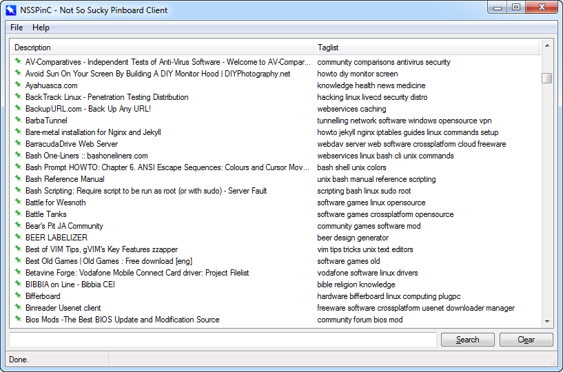
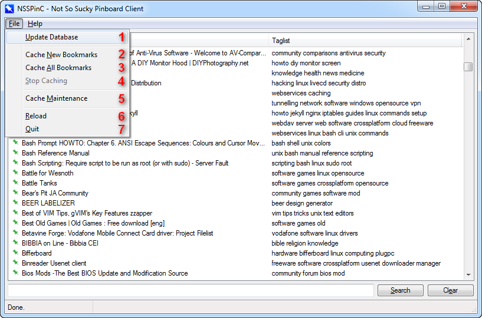
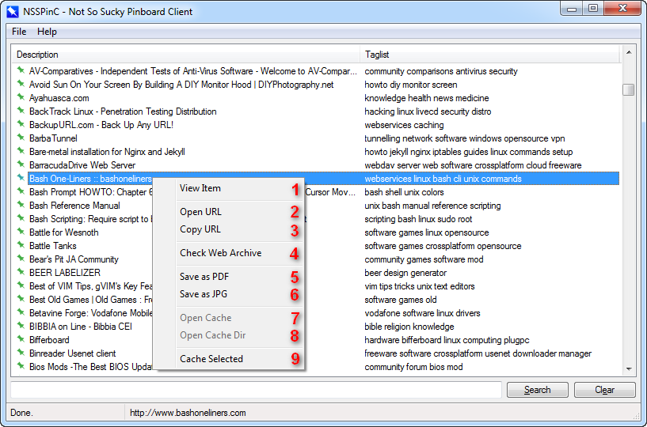

NSSPinC
PLEASE NOTE THAT THIS IS BETA SOFTWARE. I'M IN NO WAY RESPONSIBLE FOR ANY DATA LOSS.

NSSPinC, acronym for Not So Sucky Pinboard Client, is a minimalistic Pinboard client with caching support. It's written in AutoHotkey and offers very basic viewing and searching features and a full fledged caching system.
Features
- Pinboard database synchronization.
- Regular expression based search.
- Caching system based on Wget and Gzip.
- Integration with the wkhtmltopdf and wkhtmltoimage utilities.
- Internet Archive bookmark search.
- Auto-update and cache on update.
- GUI position/size store and retrieval.
- Portable.
How it works
NSSPinC works retrieving its database through the Pinboard API and filling the internal ListView with the database items. The items are then flattened and put in a string list that can be searched easily using regular expression. Each bookmark item in the ListView is preceded by a colored icon that denote the status of the bookmark:
-
Public uncached bookmark.
-
Private uncached bookmark.
-
Public cached bookmark.
-
Private cached bookmark.
The caching system works thanks to Wget and Gzip, downloading web components and eventually decompressing them if encoded with gzip or deflate. Other per-bookmark features are available through the context menu.
Caching
The caching system allows to cache uncached bookmarks, all bookmarks or a single bookmark. A cache maintenance procedure can be started to delete the cached files for the bookmarks removed from the database.
Being based on Wget this feature is very flexible and allows a high degree of customization. The commandline used by Wget can be customized globally in the configuration file (setting the CACHE_PARAM option) or overridden directly in the confirmation window when caching a single bookmark. The default one is:
--no-check-certificate --restrict-file-names=windows -e robots=off -U "Mozilla/5.0 (compatible; NSSPinC)" --wait=0.25 -N -E -H -k -nd -p
Please note that the following parameters cannot be used in a customized commandline:
-Por--directory-prefix-oor--output-file
Please use respectively the CACHE_DIR option to change the cache directory prefix and the ENABLE_DEBUG option if you want a Wget log dump in the item cache directory.
Remarks
The actual implementation of the Pinboard API is very basic. It strictly follows Pinboard guidelines regarding rate limits, but in a harsher way, doubling the waiting interval for any server error. It only implements the posts/update and posts/all API calls, so it basically check for an update and then retrieve the full database. Please refrain updating the database too frequently to avoid to pose a higher load on the server.
Debug
NSSPinC has an integrated debug system that allows to log all the main operations, saving information and data in the debug.txt file in the program directory. If enabled it saves also a dump of the Wget log in each item cache directory.
Please note that the debug file may contain sensible data. If you detect a bug and want to signal it while keeping the sensible data hidden, please contact me.
Setup and usage
-
Start NSSPinC so that it can generate the NSSPinC.ini configuration file in the program directory.
-
Visit the following page and copy the API Token: https://pinboard.in/settings/password
-
Paste the API Token in the API_TOKEN key of the configuration file, like the following:
API_TOKEN=ahkuser:C31E4B15BFCADF4245E6 -
(Optional) Download the wkhtmltox utilities and place the executables in the Tools folder.
-
Start NSSPinC and update the database clicking on the
File -> Update Databasemenu item.
Menu and features
The following screenshots show the window and context menu item.

| Index | Menu Item | Description |
|---|---|---|
| 1 | Update Database | Start database update procedure. |
| 2 | Cache New Bookmarks | Start caching uncached bookmarks. |
| 3 | Cache All Bookmarks | Start caching all bookmarks (overwrite already cached ones). |
| 4 | Stop Caching | Stop caching, enabled only if caching. |
| 5 | Cache Maintenance | Start cache maintenance (delete cache files for the bookmarks removed from the database). |
| 6 | Reload | Reload the application. |
| 7 | Quit | Exit from the application. |

| Index | Menu Item | Description |
|---|---|---|
| 1 | View Item | Open a view bookmark item window showing all the details. |
| 2 | Open URL | Open bookmark URL in the desired or default browser. |
| 3 | Copy URL | Copy bookmark URL in the clipboard. |
| 4 | Check Web Archive | Look for the bookmark URL in the Internet Archive. |
| 5 | Save As PDF | Send bookmark URL to the wkhtmltopdf processor to create a PDF. |
| 6 | Save As JPG | Send bookmark URL to the wkhtmltoimage processor to create a JPG. |
| 7 | Open Cache | Open cache main html file for the selected bookmark in the desired or default browser. |
| 8 | Open Cache Dir | Open the cache directory for the selected bookmark. |
| 9 | Cache Selected | Start the caching procedure for the selected bookmark. It shows a confirmation window that allows the user to override Wget parameters. |
Configuration file
The configuration file options must be configured as per the following rules:
| Setting | Required | Default | Description |
|---|---|---|---|
| API_TOKEN | Yes | N/A | Pinboard API Token. |
| AUTOHDR | No | 0 | Adapt the headers of the ListView automatically. |
| BROWSER_CMDLINE | No | N/A | Command line string for the desired browser. |
| CACHE_DIR | No | .\Cache | Directory where the downloaded cache files will be placed. |
| CACHE_ENABLED | No | 1 | (0 or 1) If = 1, enable the caching subsystem. If = 0 disable it. |
| CACHE_EXE_DIR | No | .\Tools | Directory where the Wget.exe and Gzip.exe are placed. |
| CACHE_ON_UPDATE | No | 0 | (0 or 1) If = 1 Start caching automatically after a successful database update. |
| CACHE_PARAM | No | Check CACHING section* | Wget parameters used to download cache components. |
| COL1 | No | 300 | Description column width. |
| COL2 | No | 200 | Tags column width. |
| DEBUG_ENABLED | No | 0 | (0 or 1) If = 1 enable debugging on debug.txt. If = 0 disable it. |
| FULLSCREEN | No | 0 | Start the program maximized. |
| HEIGHT | No | 300 | Main window height. |
| HEIGHT_2 | No | 60 | Bookmark view window height. |
| POSX | No | Center | X position coordinate for the main window. |
| POSX_2 | No | Center | X position coordinate for the bookmark view window. |
| POSY | No | Center | Y position coordinate for the main window. |
| POSY_2 | No | Center | Y position coordinate for the bookmark view window. |
| SAVE_ON_CLOSE | No | 1 | (0 or 1) If = 1 autosave main window position and size. |
| SAVE_ON_CLOSE_2 | No | 1 | (0 or 1) If = 1 autosave bookmark view window position and size. |
| MIN_ON_CLOSE | No | 0 | (0 or 1) If = 1 minimize instead of closing when the window close button is pressed. |
| UPDATE_ON_START | No | 0 | (0 or 1) If = 1 update the database on program start. |
| WEB_ARCHIVE_PFX | No | http://web.archive.org/web/*/ | Prefix to search for the desired item on the Web Archive. |
| WIDTH | No | 520 | Main widow width. |
| WIDTH_2 | No | 300 | Bookmark view window width. |
| WKHTML_PATH | No | .\Tools | Directory where the wkhtmltox utilities are placrd. |
| WKHTML_IMG_PARAM | No | N/A | wkhtmltoimage parameters for saving bookmarks as jpg. |
| WKHTML_PDF_PARAM | No | --no-outline | wkhtmltopdf parameters for saving bookmarks as pdf. |
Example:
[SETTINGS]
API_TOKEN=cyruz:D25A0A05BFCAAA4223E2
SAVE_ON_CLOSE=1
SAVE_ON_CLOSE_2=1
MIN_ON_CLOSE=1
AUTOHDR=0
WIDTH=1263
HEIGHT=662
POSX=307
POSY=159
COL1=794
COL2=327
WIDTH_2=493
HEIGHT_2=127
POSX_2=544
POSY_2=448
DEBUG_ENABLED=1
CACHE_DIR=D:\Cache
License
NSSPinC, wkhtmltopdf and wkhtmltoimage are released under the terms of the GNU Lesser General Public License. Wget and Gzip are released under the term of the GNU General Public License. The icon used are part of Visual Pharm's Windows 8 metro style set and are licensed under the terms of the Creative Commons Attribution-NoDerivs 3.0 Unported license.
Contact
For hints, bug reports or anything else, you can contact me at focabresm@gmail.com, open an issue on the dedicated GitHub repo or use the AHKscript development thread.